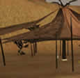

About Shadowclan
Joining Shadowclan
Character guide
Member guide
Message board

Why join? | Expectations of Members | Language | Joining procedure | Picking names
Shadowclan is an open membership guild: Anyone who wishes to create and roleplay an Irekei character according to our guidelines is welcome to become part of our Virakt. However, we also require that Shadowclan characters be born into the clan: Your Shadowclan Irekei will be created specifically to join the guild; we do not accept pre-existing characters. With the speed and ease with which a character can gain levels in a good guild in Shadowbane, this is not so much of a hardship as it might seem to veterans of Camelot or Everquest.
When creating a character, keep the following rules in mind:
If you need help or information about choosing stats, traits, or a starting class, please see the New Player Guide.
When you first log your new Irekei on, you will need to select a starting city; choose the Anomani Market. We will have a recruiter stationed in that village during peak hours. When you arrive, type /city Jha Shadowclan! and send a tell to whomever answers, saying that you'd like to join. Once you've made contact with the guild, the senior members will help get you equipped, answer any guild-related or gameplay questions you have, steer you towards one of our hunting parties, and if you're new to Shadowbane, help you get oriented to the gameworld and your controls.
While you are on the starting island, your responsibilities are to become familiar with the gameworld, interface, and combat engine, as well as with the tone and playstyle of the guild, our language and customs, and so forth. At some point between level 10 and 20, you should move to the mainland and join the main Shadowclan guild on the sands of the Sun's Anvil, unless it seems that the guild's playstyle is not going to be compatible with your own preferences and interests.
Why join? | Expectations of Members | Language | Joining procedure | Picking names
© 2003 Shadowclan.org
You must select the Dark Red skin color; the bright red skin and black skin are not allowed.

When you first log your new Irekei on, you will need to select a starting city; choose the Anomani Market.